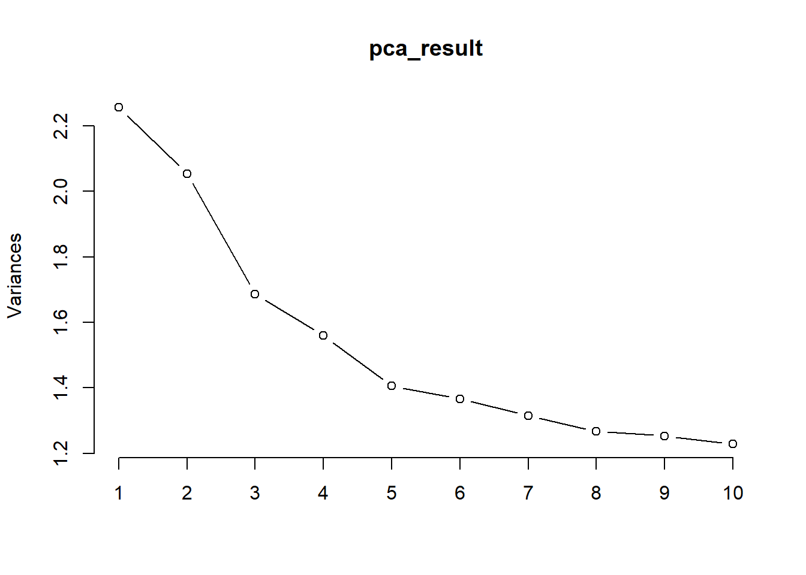

library(tidyverse)
load("../data/tech_data.Rdata")Code for generating principal components, based on food data.
Loading in John’s data:
Creating dataset
Currently: - Population is all adults over 45 who responded to the survey on BOTH days. - Motivation for this is that metabolism generally decreases with age… probably good to consult the nutrition students, though. - Food codes have been replaced with their actual labels in the data dictionary.
library(stringr)
fooditems_dict_major = read.csv("../data/nutmstatDataItems2019_CSV.csv") |>
filter(str_length(Category.Code) == 3) |>
dplyr::rename("THRDIG" = "Category.Code") |>
dplyr::rename("Category.Label.Major" = "Category.Label")
fooditems_dict_minor = read.csv("../data/nutmstatDataItems2019_CSV.csv") |>
filter(str_length(Category.Code) == 5) |>
dplyr::rename("FIVDIG" = "Category.Code") |>
dplyr::rename("Category.Label.Minor" = "Category.Label")
both_days_adults_food <- tech_food |>
group_by(ABSPID) |>
left_join(y = tech_biom |> select(ABSPID, AGEC), by = "ABSPID") |>
filter(n_distinct(DAYNUM) == 2, AGEC >= 45) |>
ungroup() |>
left_join(fooditems_dict_major, by = "THRDIG") |>
left_join(fooditems_dict_minor, by = "FIVDIG") |>
select(ABSPID, Category.Label.Major, Category.Label.Minor, GRAMWGT)
head(both_days_adults_food, 10)# A tibble: 10 × 4
ABSPID Category.Label.Major Category.Label.Minor GRAMWGT
<chr> <chr> <chr> <dbl>
1 NPA11B10000011 Breakfast cereals, ready to eat Breakfast cereal, wh… 37.8
2 NPA11B10000011 Dairy milk (cow, sheep and goat) Milk, cow, fluid, re… 206
3 NPA11B10000011 Nuts and nut products Mixed nuts or nuts a… 17.1
4 NPA11B10000011 Tea Tea, regular, caffei… 150
5 NPA11B10000011 Dairy milk (cow, sheep and goat) Milk, cow, fluid, re… 30.9
6 NPA11B10000011 Sugar, honey and syrups Sugar 6.64
7 NPA11B10000011 Tea Tea, regular, caffei… 330
8 NPA11B10000011 Dairy milk (cow, sheep and goat) Milk, cow, fluid, re… 30.9
9 NPA11B10000011 Sugar, honey and syrups Sugar 6.64
10 NPA11B10000011 Fruit, nut and seed-bars Nut and seed based c… 28 (NEW) Splitting necessary major groups by minor groups
complex_group_splits <- both_days_adults_food |>
mutate(Category.Label.Major =
ifelse(Category.Label.Major == "Potatoes",
ifelse(Category.Label.Minor == "Potato products", "Fried Potatoes and chips", "Potatoes and potato dishes"),
Category.Label.Major)) |>
mutate(Category.Label.Major =
ifelse(Category.Label.Major == "Mixed dishes where cereal is the major ingredient",
## then
case_when(
str_detect(Category.Label.Minor, regex("pizza", ignore_case = TRUE)) ~ "Pizza",
str_detect(Category.Label.Minor, regex("burgers", ignore_case = TRUE)) ~ "Burgers",
str_detect(Category.Label.Minor, regex("sushi", ignore_case = TRUE)) ~ "Sushi",
str_detect(Category.Label.Minor, regex("saturated fat >5 g/100 g", ignore_case = TRUE)) ~ "High-fat cereal-based takeaway-style food",
# LOW FAT TAKEAWAY: Note: R does not recognise ≤ sign. All higher fat cases captured above.
str_detect(Category.Label.Minor, regex("5 g/100 g", ignore_case = TRUE)) | Category.Label.Minor == "Other savoury grain dishes" ~ "Low-fat cereal-based takeaway-style food",
.default = "Gnocchi and steamed buns"
),
Category.Label.Major
)
) |>
select(-Category.Label.Minor) |>
dplyr::rename("Category.Label" = "Category.Label.Major")Creating a “servings” measure based on grams
Looking at the food data, we can create define “1 serving” as the median grams consumed of a particular item.
From here, we just compute servings as (using tea as an example):
\[\text{Servings(Tea)} = \frac{\text{Recorded tea weight (g)}}{\text{Median tea weight (g)}}\]
By comparing grams to “servings”, we can directly compare different types of food consumed, without having to worry about how different foods are usually consumed in different weights.
both_days_adults_food_servings <- complex_group_splits |>
group_by(Category.Label) |>
mutate(median_grams = median(GRAMWGT)) |>
mutate(Servings = ifelse(median_grams != 0, GRAMWGT / median_grams, 0)) # sets to 0 if median grams is 0... avoids any divide by 0 errors.
both_days_adults_food_servings$Servings <- format(both_days_adults_food_servings$Servings, scientific = FALSE)
head(both_days_adults_food_servings, 10)# A tibble: 10 × 5
# Groups: Category.Label [6]
ABSPID Category.Label GRAMWGT median_grams Servings
<chr> <chr> <dbl> <dbl> <chr>
1 NPA11B10000011 Breakfast cereals, ready to eat 37.8 38.5 " 0.9…
2 NPA11B10000011 Dairy milk (cow, sheep and goat) 206 31.2 " 6.6…
3 NPA11B10000011 Nuts and nut products 17.1 20 " 0.8…
4 NPA11B10000011 Tea 150 220 " 0.6…
5 NPA11B10000011 Dairy milk (cow, sheep and goat) 30.9 31.2 " 0.9…
6 NPA11B10000011 Sugar, honey and syrups 6.64 6.3 " 1.0…
7 NPA11B10000011 Tea 330 220 " 1.5…
8 NPA11B10000011 Dairy milk (cow, sheep and goat) 30.9 31.2 " 0.9…
9 NPA11B10000011 Sugar, honey and syrups 6.64 6.3 " 1.0…
10 NPA11B10000011 Fruit, nut and seed-bars 28 20 " 1.4…Summarising data such that we have one row per individual
Each row is summed servings of food that person consumed over two days.
wide_adults_food_servings = both_days_adults_food_servings |>
select(-GRAMWGT, -median_grams) |>
mutate(Servings = as.numeric(Servings)) |>
group_by(ABSPID, Category.Label) |>
summarise(Total_Servings = sum(Servings, na.rm = TRUE), .groups = 'drop') |>
pivot_wider(names_from = Category.Label, values_from = Total_Servings, values_fill = 0)
head(wide_adults_food_servings, 10)# A tibble: 10 × 121
ABSPID `Berry fruit` Breakfast cereals, r…¹ Cheese Chocolate and chocol…²
<chr> <dbl> <dbl> <dbl> <dbl>
1 NPA11B100… 0.0273 2.4 2.21 1
2 NPA11B100… 0 0 1.12 0
3 NPA11B100… 0 2.38 0.576 0.64
4 NPA11B100… 0.273 2.34 3.75 1.4
5 NPA11B100… 0 0 1 0.68
6 NPA11B100… 0 1.77 4 2.68
7 NPA11B100… 2.25 0 4.50 0
8 NPA11B100… 0 0.909 0.384 0
9 NPA11B100… 0 0 0.28 0
10 NPA11B100… 6.25 0 0 0
# ℹ abbreviated names: ¹`Breakfast cereals, ready to eat`,
# ²`Chocolate and chocolate-based confectionery`
# ℹ 116 more variables: `Coffee and coffee substitutes` <dbl>, Cordials <dbl>,
# `Dairy milk (cow, sheep and goat)` <dbl>,
# `Dishes where vegetable is the major component` <dbl>,
# `Dried fruit, preserved fruit` <dbl>,
# `Fin fish (excluding commercially sterile)` <dbl>, …Grouping food items together with substantial overlap
Merging together overlapping food items (columns) aids w factor analysis.
Note: Ingredients with minimal nutritional content (e.g. baking soda, herbs) and/or low count will be removed.
wide_adults_food_servings_foods_grouped <- wide_adults_food_servings |>
# Removing variables with minimal nutritional content and/or rare groups, which don't fit in with anything else.
select(-c(
`Herbs, spices, seasonings and stock cubes`, # this also includes added salt..? Should be careful.
`Essences`,
`Stuffings`,
`Chemical raising agents and cooking ingredients`,
`Infant foods`,
`Infant cereal products`,
`Cheese substitute`,
`Soy-based ice confection`,
`Dry soup mix`,
`Soy-based yoghurts`,
`Formula dietary foods`
)) |>
# Soups
mutate(Soups = rowSums(across(matches("Soup", ignore.case = TRUE)), na.rm = TRUE)) |>
select(-matches("Soup"), Soups) |>
# Fish
mutate(`Fish and Fish Products` = rowSums(across(c(
`Other sea and freshwater foods`,
`Crustacea and molluscs (excluding commercially sterile)`,
`Fish and seafood products (homemade and takeaway)`,
`Mixed dishes with fish or seafood as the major component`,
`Packed (commercially sterile) fish and seafood`,
`Fin fish (excluding commercially sterile)`
)), na.rm = TRUE)) |>
select(-c(
`Other sea and freshwater foods`,
`Crustacea and molluscs (excluding commercially sterile)`,
`Fish and seafood products (homemade and takeaway)`,
`Mixed dishes with fish or seafood as the major component`,
`Packed (commercially sterile) fish and seafood`,
`Fin fish (excluding commercially sterile)`)) |>
# Fruit
mutate(`Fresh Fruit and Fruit-based Dishes` = rowSums(across(c(
`Berry fruit`,
`Stone fruit`,
`Citrus fruit`,
`Other fruit`,
`Pome fruit`,
`Tropical and subtropical fruit`,
`Mixtures of two or more groups of fruit`
)))) |>
select(-`Berry fruit`, -`Stone fruit`, -`Citrus fruit`, -`Other fruit`, -`Pome fruit`, -`Tropical and subtropical fruit`, -`Mixtures of two or more groups of fruit`) |>
# Fruit and muesli bars
mutate(`Fruit and Muesli-style bars` = rowSums(across(c(
`Fruit, nut and seed-bars`,
`Muesli or cereal style bars`)))) |>
select(-c(`Fruit, nut and seed-bars`,
`Muesli or cereal style bars`)) |>
# Cordials and soft drink
mutate(`Soft drinks, Cordials, Sports drinks, and Milkshakes` = rowSums(across(c(
`Soft drinks, and flavoured mineral waters`,
`Cordials`,
`Flavoured milks and milkshakes`,
`Electrolyte, energy and fortified drinks`)))) |>
select(-c(`Soft drinks, and flavoured mineral waters`,
`Cordials`,
`Flavoured milks and milkshakes`,
`Electrolyte, energy and fortified drinks`)) |>
# Desserts
mutate(`Milk-based and other dessert items` = rowSums(across(c(
`Other dishes where milk or a milk product is the major component`,
`Sweet biscuits`,
`Frozen milk products`,
`Dishes and products other than confectionery where sugar is the major component`,
`Custards`,
`Batter-based products`,
`Mixed dishes where fruit is the major component`,
`Cakes, muffins, scones, cake-type desserts`)))) |>
select(-c(`Other dishes where milk or a milk product is the major component`,
`Sweet biscuits`,
`Frozen milk products`,
`Dishes and products other than confectionery where sugar is the major component`,
`Mixed dishes where fruit is the major component`,
`Custards`, `Batter-based products`, `Cakes, muffins, scones, cake-type desserts`)) |>
# Chocolate and lollies
mutate(`Chocolate and lollies` = rowSums(across(c(
`Chocolate and chocolate-based confectionery`,
`Other confectionery`)))) |>
select(-c(`Chocolate and chocolate-based confectionery`,
`Other confectionery`)) |>
# Butters, margarines, and oils
mutate(`Butters, margarines, and oils` = rowSums(across(c(
`Butters`,
`Margarine and table spreads`,
`Plant oils`,
`Unspecified fats`,
`Dairy blends`,
`Other fats`)))) |>
select(-c(`Butters`, `Margarine and table spreads`, `Plant oils`, `Unspecified fats`, `Dairy blends`, `Other fats`)) |>
# Sauces
mutate(`Sauces` = rowSums(across(c(`Gravies and savoury sauces`, `Salad dressings`)))) |>
select(-c(`Gravies and savoury sauces`, `Salad dressings`)) |>
# Coffee and Tea
mutate(`Coffee and Tea` = rowSums(across(c(`Coffee and coffee substitutes`, `Tea`)))) |>
select(-c(`Coffee and coffee substitutes`, `Tea`)) |>
# Starchy snacks
mutate(`Starchy snacks` = rowSums(across(c(
`Extruded or reformed snacks`,
`Other snacks`,
`Corn snacks`,
`Potato snacks`
)))) |>
select(-c(
`Extruded or reformed snacks`,
`Other snacks`,
`Corn snacks`,
`Potato snacks`)) |>
# Alcohol
mutate(`Alcohol` = rowSums(across(c(
`Wines`,
`Beers`,
`Spirits`,
`Cider and perry`,
`Other alcoholic beverages`
)))) |>
select(-c(
`Wines`,
`Beers`,
`Spirits`,
`Cider and perry`,
`Other alcoholic beverages`
)) |>
# Legumes
mutate(`Legumes and pulses` = rowSums(across(c(
`Peas and beans`,
`Mature legumes and pulses`,
`Mature legume and pulse products and dishes`
)))) |>
select(-c(
`Peas and beans`,
`Mature legumes and pulses`,
`Mature legume and pulse products and dishes`
)) |>
# Breakfast cereal and porridge
mutate(`Breakfast cereal and porridge` = rowSums(across(c(
`Breakfast cereals, ready to eat`,
`Breakfast cereals, hot porridge style`
)))) |>
select(-c(
`Breakfast cereals, ready to eat`,
`Breakfast cereals, hot porridge style`)) |>
# Cheese, yogurts
mutate(`Cheese, yogurt, cream` = rowSums(across(c(
`Cheese`,
`Yoghurt`,
`Cream`
)))) |>
select(-c(
`Cheese`,
`Yoghurt`,
`Cream`
)) |>
# Processed meat
mutate(`Processed meats` = rowSums(across(c(
`Processed meat`,
`Sausages, frankfurts and saveloys`
)))) |>
select(-c(
`Processed meat`,
`Sausages, frankfurts and saveloys`
)) |>
# Red meat, unprocessed
mutate(`Red meat, unprocessed` = rowSums(across(c(
`Beef, sheep and pork, unprocessed`,
`Mammalian game meats`,
)))) |>
select(-c(
`Beef, sheep and pork, unprocessed`,
`Mammalian game meats`,
)) |>
# Eggs and egg dishes
mutate(`Eggs and egg dishes` = rowSums(across(c(
`Eggs`,
`Dishes where egg is the major ingredient`,
)))) |>
select(-c(
`Eggs`,
`Dishes where egg is the major ingredient`,
))
# This is actually quite annoying... `mixed dishes where cereal is main component` includes sandwiches, sushi, pizza, etc...
## Testing
colnames(wide_adults_food_servings_foods_grouped) [1] "ABSPID"
[2] "Dairy milk (cow, sheep and goat)"
[3] "Dishes where vegetable is the major component"
[4] "Dried fruit, preserved fruit"
[5] "Flours and other cereal grains and starches"
[6] "Fruit and vegetable juices, and drinks"
[7] "Leaf and stalk vegetables"
[8] "Low-fat cereal-based takeaway-style food"
[9] "Mixed dishes where poultry or feathered game is the major component"
[10] "Nuts and nut products"
[11] "Pickles, chutneys and relishes"
[12] "Potatoes and potato dishes"
[13] "Regular breads, and bread rolls (plain/unfilled/untopped varieties)"
[14] "Sugar, honey and syrups"
[15] "Waters, municipal and bottled, unflavoured"
[16] "Pizza"
[17] "Poultry and feathered game"
[18] "Cabbage, cauliflower and similar brassica vegetables"
[19] "Carrot and similar root vegetables"
[20] "Pastries"
[21] "Savoury biscuits"
[22] "Other fruiting vegetables"
[23] "Other vegetables and vegetable combinations"
[24] "Jam and lemon spreads, chocolate spreads, sauces"
[25] "Tomato and tomato products"
[26] "Yeast, and yeast vegetable or meat extracts"
[27] "Mixed dishes where beef, sheep, pork or mammalian game is the major component"
[28] "Pasta and pasta products (without sauce)"
[29] "Burgers"
[30] "Dips"
[31] "English-style muffins, flat breads, and savoury and sweet breads"
[32] "Dairy milk substitutes, unflavoured"
[33] "Other beverage flavourings and prepared beverages"
[34] "Fried Potatoes and chips"
[35] "Intense sweetening agents"
[36] "Organ meats and offal, products and dishes"
[37] "Seeds and seed products"
[38] "Sushi"
[39] "High-fat cereal-based takeaway-style food"
[40] "Meat substitutes"
[41] "Dishes where meat substitutes are the major component"
[42] "Mixed dishes where sausage, bacon, ham or other processed meat is the major component"
[43] "Gnocchi and steamed buns"
[44] "Soups"
[45] "Fish and Fish Products"
[46] "Fresh Fruit and Fruit-based Dishes"
[47] "Fruit and Muesli-style bars"
[48] "Soft drinks, Cordials, Sports drinks, and Milkshakes"
[49] "Milk-based and other dessert items"
[50] "Chocolate and lollies"
[51] "Butters, margarines, and oils"
[52] "Sauces"
[53] "Coffee and Tea"
[54] "Starchy snacks"
[55] "Alcohol"
[56] "Legumes and pulses"
[57] "Breakfast cereal and porridge"
[58] "Cheese, yogurt, cream"
[59] "Processed meats"
[60] "Red meat, unprocessed"
[61] "Eggs and egg dishes" Results of variable merging (so far).
colnames(wide_adults_food_servings_foods_grouped) [1] "ABSPID"
[2] "Dairy milk (cow, sheep and goat)"
[3] "Dishes where vegetable is the major component"
[4] "Dried fruit, preserved fruit"
[5] "Flours and other cereal grains and starches"
[6] "Fruit and vegetable juices, and drinks"
[7] "Leaf and stalk vegetables"
[8] "Low-fat cereal-based takeaway-style food"
[9] "Mixed dishes where poultry or feathered game is the major component"
[10] "Nuts and nut products"
[11] "Pickles, chutneys and relishes"
[12] "Potatoes and potato dishes"
[13] "Regular breads, and bread rolls (plain/unfilled/untopped varieties)"
[14] "Sugar, honey and syrups"
[15] "Waters, municipal and bottled, unflavoured"
[16] "Pizza"
[17] "Poultry and feathered game"
[18] "Cabbage, cauliflower and similar brassica vegetables"
[19] "Carrot and similar root vegetables"
[20] "Pastries"
[21] "Savoury biscuits"
[22] "Other fruiting vegetables"
[23] "Other vegetables and vegetable combinations"
[24] "Jam and lemon spreads, chocolate spreads, sauces"
[25] "Tomato and tomato products"
[26] "Yeast, and yeast vegetable or meat extracts"
[27] "Mixed dishes where beef, sheep, pork or mammalian game is the major component"
[28] "Pasta and pasta products (without sauce)"
[29] "Burgers"
[30] "Dips"
[31] "English-style muffins, flat breads, and savoury and sweet breads"
[32] "Dairy milk substitutes, unflavoured"
[33] "Other beverage flavourings and prepared beverages"
[34] "Fried Potatoes and chips"
[35] "Intense sweetening agents"
[36] "Organ meats and offal, products and dishes"
[37] "Seeds and seed products"
[38] "Sushi"
[39] "High-fat cereal-based takeaway-style food"
[40] "Meat substitutes"
[41] "Dishes where meat substitutes are the major component"
[42] "Mixed dishes where sausage, bacon, ham or other processed meat is the major component"
[43] "Gnocchi and steamed buns"
[44] "Soups"
[45] "Fish and Fish Products"
[46] "Fresh Fruit and Fruit-based Dishes"
[47] "Fruit and Muesli-style bars"
[48] "Soft drinks, Cordials, Sports drinks, and Milkshakes"
[49] "Milk-based and other dessert items"
[50] "Chocolate and lollies"
[51] "Butters, margarines, and oils"
[52] "Sauces"
[53] "Coffee and Tea"
[54] "Starchy snacks"
[55] "Alcohol"
[56] "Legumes and pulses"
[57] "Breakfast cereal and porridge"
[58] "Cheese, yogurt, cream"
[59] "Processed meats"
[60] "Red meat, unprocessed"
[61] "Eggs and egg dishes" PCA
pca_result <- prcomp(wide_adults_food_servings_foods_grouped |> select(-ABSPID), scale = TRUE)
summary(pca_result)Importance of components:
PC1 PC2 PC3 PC4 PC5 PC6 PC7
Standard deviation 1.50182 1.43322 1.29852 1.24851 1.18544 1.16899 1.14658
Proportion of Variance 0.03759 0.03424 0.02810 0.02598 0.02342 0.02278 0.02191
Cumulative Proportion 0.03759 0.07183 0.09993 0.12591 0.14933 0.17211 0.19402
PC8 PC9 PC10 PC11 PC12 PC13 PC14
Standard deviation 1.12589 1.11955 1.10834 1.09377 1.08267 1.0734 1.06866
Proportion of Variance 0.02113 0.02089 0.02047 0.01994 0.01954 0.0192 0.01903
Cumulative Proportion 0.21514 0.23603 0.25651 0.27645 0.29598 0.3152 0.33422
PC15 PC16 PC17 PC18 PC19 PC20 PC21
Standard deviation 1.06253 1.05311 1.04712 1.04589 1.04065 1.03773 1.0248
Proportion of Variance 0.01882 0.01848 0.01827 0.01823 0.01805 0.01795 0.0175
Cumulative Proportion 0.35304 0.37152 0.38980 0.40803 0.42608 0.44402 0.4615
PC22 PC23 PC24 PC25 PC26 PC27 PC28
Standard deviation 1.01742 1.0159 1.01034 1.00854 1.00631 0.99763 0.99024
Proportion of Variance 0.01725 0.0172 0.01701 0.01695 0.01688 0.01659 0.01634
Cumulative Proportion 0.47878 0.4960 0.51299 0.52994 0.54682 0.56341 0.57975
PC29 PC30 PC31 PC32 PC33 PC34 PC35
Standard deviation 0.98749 0.98316 0.9798 0.97459 0.9676 0.96622 0.96207
Proportion of Variance 0.01625 0.01611 0.0160 0.01583 0.0156 0.01556 0.01543
Cumulative Proportion 0.59601 0.61212 0.6281 0.64395 0.6595 0.67511 0.69054
PC36 PC37 PC38 PC39 PC40 PC41 PC42
Standard deviation 0.9549 0.94763 0.94022 0.93716 0.92686 0.91937 0.91699
Proportion of Variance 0.0152 0.01497 0.01473 0.01464 0.01432 0.01409 0.01401
Cumulative Proportion 0.7057 0.72070 0.73543 0.75007 0.76439 0.77848 0.79249
PC43 PC44 PC45 PC46 PC47 PC48 PC49
Standard deviation 0.91025 0.90591 0.89278 0.88682 0.88180 0.87066 0.8661
Proportion of Variance 0.01381 0.01368 0.01328 0.01311 0.01296 0.01263 0.0125
Cumulative Proportion 0.80630 0.81998 0.83326 0.84637 0.85933 0.87196 0.8845
PC50 PC51 PC52 PC53 PC54 PC55 PC56
Standard deviation 0.85857 0.84567 0.84059 0.8233 0.8162 0.80524 0.79668
Proportion of Variance 0.01229 0.01192 0.01178 0.0113 0.0111 0.01081 0.01058
Cumulative Proportion 0.89675 0.90867 0.92045 0.9317 0.9428 0.95365 0.96423
PC57 PC58 PC59 PC60
Standard deviation 0.7824 0.74656 0.70449 0.6929
Proportion of Variance 0.0102 0.00929 0.00827 0.0080
Cumulative Proportion 0.9744 0.98373 0.99200 1.0000# This is what is used in regression.
pca_scores <- pca_result$x
# loadings (contributions of each variable to the components)
pca_loadings <- pca_result$rotation
# Plot the variance explained by each principal component
plot(pca_result, type = "l")
There’s approx. 4 PC’s with eigenvalue > 1.5.
Saving PCA and food serving data
save(pca_result, file = "PCA_results.RData")
save(wide_adults_food_servings_foods_grouped,file = "wide_adults_food_servings_foods_grouped.RData")